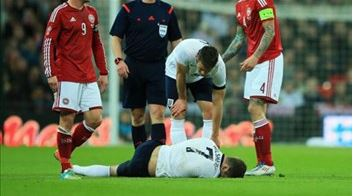

Clip hay trong tuần


Bóng đá Anh

Video: Khi siêu phẩm sút phạt gặp... thủ môn "người nhện"
Tiền vệ của Arsenal Jack Wilshere nhiều khả năng đã gặp phải một chấn thương khá nghiêm trọng trong trận giao hữu giữa Anh và Đan Mạch vào rạng sáng nay
Bóng đá TBN
Video: Khi siêu phẩm sút phạt gặp... thủ môn "người nhện"
Tiền vệ của Arsenal Jack Wilshere nhiều khả năng đã gặp phải một chấn thương khá nghiêm trọng trong trận giao hữu giữa Anh và Đan Mạch vào rạng sáng nay
Tin bình luận nhiều
- Chấm điểm Olympiacos 2-0 M.U: Quỷ vô hồn
- Chấm điểm Arsenal 0-2 Bayern: Buồn cho Ozil
- Thua thảm Olympiacos, David Moyes nói gì?
- Nhà Glazer chi 200 triệu bảng cho Moyes
- Moyes đặt mục tiêu “khó hơn lên trời” cho M.U
- Terry dùng “tiểu xảo” giúp Chelsea… thoát thua
- 10 “hung thần” của các CLB Premier League